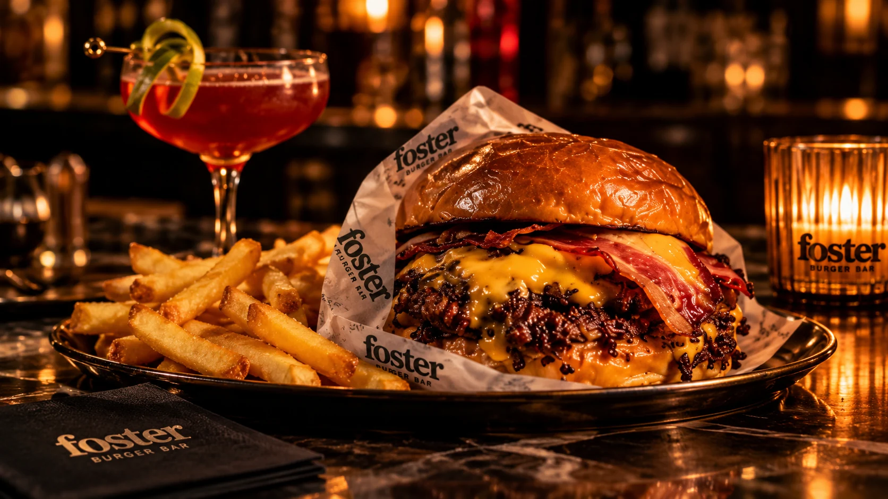
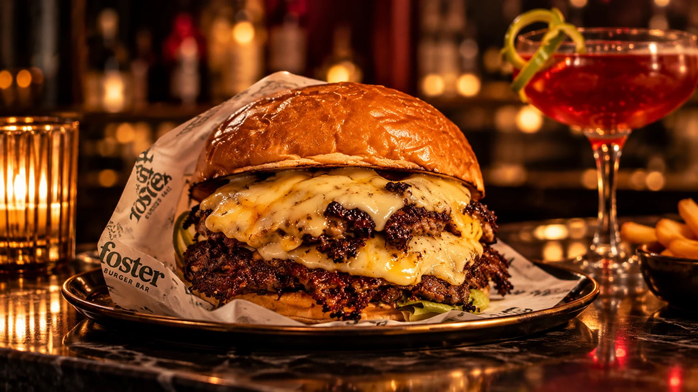
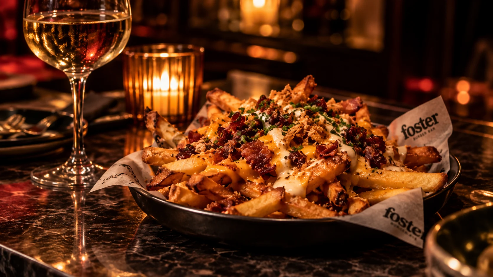
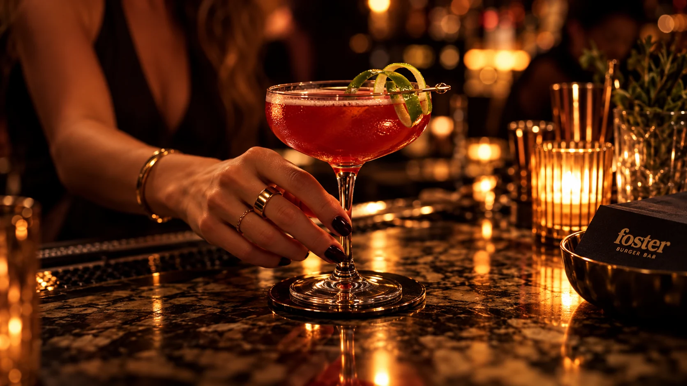
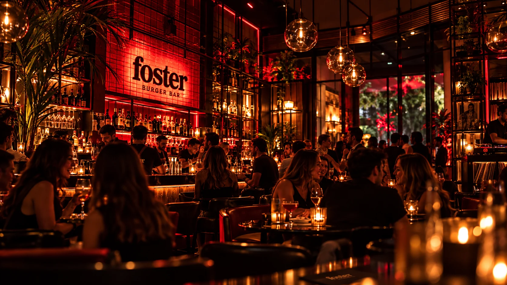
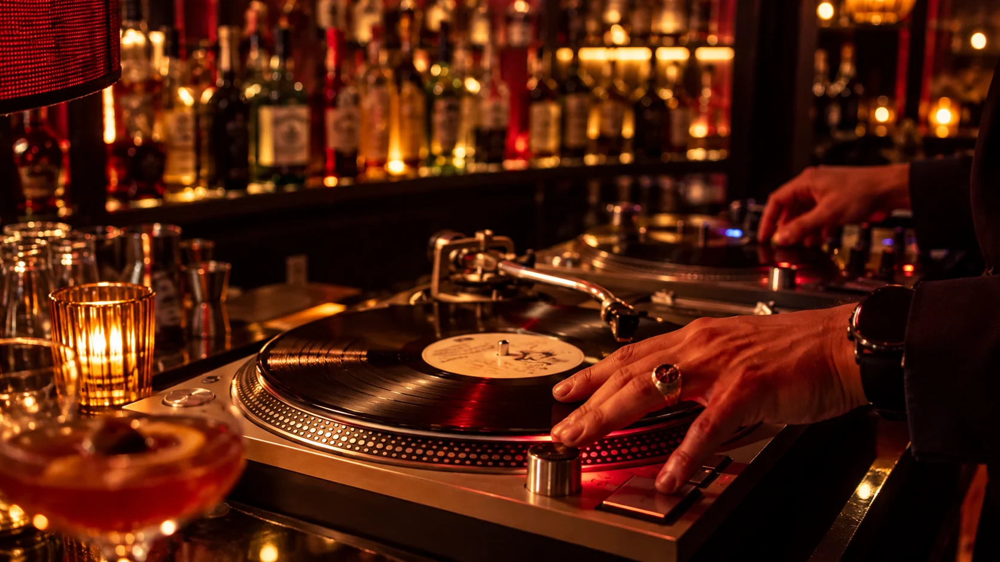
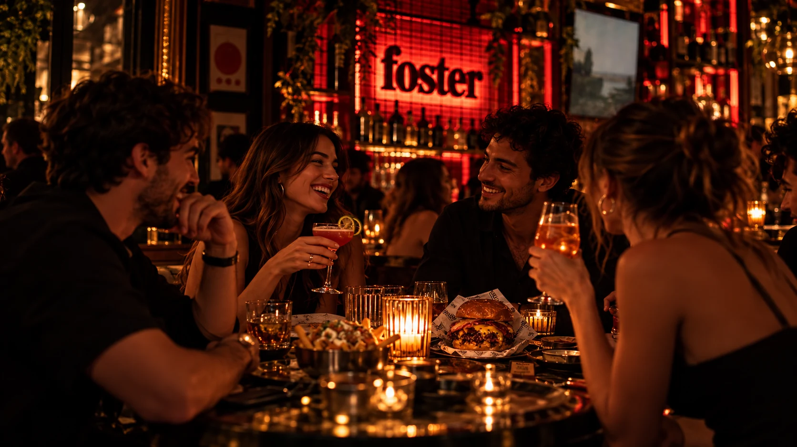

BURGERS
COCKTAILS
MUSIC
GOOD PEOPLE
Un barcitodonde pasancosas lindas.
Smash burgers, cocktails, buena música
y noches que se quedan.
Reservas solo martes y miércoles
01 / PARA ABRIR EL APETITO
Destacados de la carta

BURGERS / 01
Smash
burgers
El primer motivo para quedarse.

PARA COMPARTIR / 02
Algo para
el medio
Porque el plan se disfruta más juntos.

COCKTAILS / 03
Un trago,
otra charla
Y la noche sigue su propio ritmo.
Las imágenes son conceptuales. La carta detallada se incorporará cuando el negocio confirme productos y precios.

BURGERS / COCKTAILS / MUSIC / PEOPLE02 / LA EXPERIENCIA FOSTER
Noches que
se viven
distinto.
Una buena noche empieza con un buen plan. Música, tragos, burgers y buena gente: lo demás pasa solo.
Asomate a la noche
Tragos.
Burgers.
Good people.

03 / HACÉ TU PLAN
Reservas solo
martes y miércoles.
De martes a domingo, desde las 19:00 h. Si querés venir con mesa solicitada, elegí un martes o miércoles y prepará tu mensaje.
La solicitud no confirma disponibilidad. Te esperamos por Instagram para coordinar.
Solicitar reserva04 / UNA NOCHE EN IMÁGENES
Buenas burgers. Mejores noches.
Galería de dirección visual conceptual. Las imágenes no verifican el espacio ni productos actuales del bar.